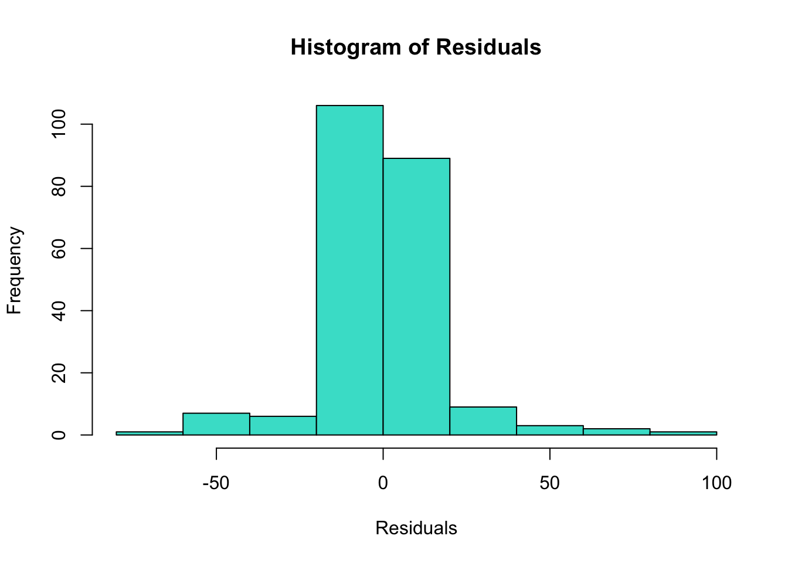

Variable |
Hispanic |
Non-Hispanic American Indian or Alaska Native |
Non-Hispanic Asian |
Non-Hispanic Black |
Non-Hispanic Native Hawaiian or Other Pacific Islander |
Non-Hispanic White |
Other/Unknown |
|---|---|---|---|---|---|---|---|
| COVID-19 Deaths | 608 (46, 1,693) | 40 (2, 188) | 110 (6, 429) | 542 (30, 1,986) | 9 (2, 27) | 740 (25, 4,118) | 34 (5, 127) |
| Total Deaths | 3,109 (744, 9,368) | 203 (28, 1,097) | 938 (110, 2,606) | 5,042 (675, 16,874) | 54 (11, 183) | 14,640 (1,956, 74,161) | 527 (210, 1,170) |
| Sex | |||||||
| Female | 16 (50%) | 16 (50%) | 16 (50%) | 16 (50%) | 16 (50%) | 16 (50%) | 16 (50%) |
| Male | 16 (50%) | 16 (50%) | 16 (50%) | 16 (50%) | 16 (50%) | 16 (50%) | 16 (50%) |
| Education Level | |||||||
| Associate degree or some college | 8 (25%) | 8 (25%) | 8 (25%) | 8 (25%) | 8 (25%) | 8 (25%) | 8 (25%) |
| Bachelor’s degree or more | 8 (25%) | 8 (25%) | 8 (25%) | 8 (25%) | 8 (25%) | 8 (25%) | 8 (25%) |
| High school graduate/GED or less | 8 (25%) | 8 (25%) | 8 (25%) | 8 (25%) | 8 (25%) | 8 (25%) | 8 (25%) |
| Unknown | 8 (25%) | 8 (25%) | 8 (25%) | 8 (25%) | 8 (25%) | 8 (25%) | 8 (25%) |
| Age Group | |||||||
| 0-17 years | 8 (25%) | 8 (25%) | 8 (25%) | 8 (25%) | 8 (25%) | 8 (25%) | 8 (25%) |
| 18-49 years | 8 (25%) | 8 (25%) | 8 (25%) | 8 (25%) | 8 (25%) | 8 (25%) | 8 (25%) |
| 50-64 years | 8 (25%) | 8 (25%) | 8 (25%) | 8 (25%) | 8 (25%) | 8 (25%) | 8 (25%) |
| 65 years and over | 8 (25%) | 8 (25%) | 8 (25%) | 8 (25%) | 8 (25%) | 8 (25%) | 8 (25%) |
| 1
Median (Q1, Q3); n (%) |
|||||||
EPI 590R: Final Project Analysis
Data Description
This data highlights total deaths and deaths from COVID-19 for people residing in the United States, stratified by educational attainment level (high school graduate/GED, associate degree, or bachelor’s degree or more), race/ethnicity, sex, and age group (0-17 years, 18-49 years, 50-64 years, or 65 years and older). All of the data was collected between 2020 and 2021. This data was reported to the National Center for Health Statistics (NCHS) and Division of Vital Statistics (DVS) and retrieved from the Centers for Disease Control (CDC) website.
Results of Analysis
As seen in Table 1, there were 224 total observations across all the race/Hispanic origin categories, but these were due to how data was standardized across all the categorical variables to ensure that aggregate COVID-19 and total death counts were equal across the different strata. Therefore, this total observation value does not refer to the total number of people included in the mortality data (as evidenced by the larger counts of deaths in each category). Among data collected from Hispanic people, there were 608 (46, 1,693) median deaths (Q1, Q3) from COVID-19 and 3,109 (744, 9,368) median deaths (Q1, Q3) overall.
Variable |
log(IRR) 1 |
95% CI 1 |
p-value |
|---|---|---|---|
| Race or Hispanic Origin | |||
| Hispanic | — | — | |
| Non-Hispanic American Indian or Alaska Native | -2.8 | -2.8, -2.7 | <0.001 |
| Non-Hispanic Asian | -1.6 | -1.6, -1.6 | <0.001 |
| Non-Hispanic Black | -0.20 | -0.21, -0.19 | <0.001 |
| Non-Hispanic Native Hawaiian or Other Pacific Islander | -4.6 | -4.7, -4.5 | <0.001 |
| Non-Hispanic White | 1.2 | 1.2, 1.2 | <0.001 |
| Other/Unknown | -3.2 | -3.3, -3.2 | <0.001 |
| Sex | |||
| Female | — | — | |
| Male | 0.17 | 0.17, 0.18 | <0.001 |
| Education Level | |||
| Associate degree or some college | — | — | |
| Bachelor’s degree or more | -0.05 | -0.06, -0.04 | <0.001 |
| High school graduate/GED or less | 1.4 | 1.4, 1.4 | <0.001 |
| Unknown | -1.8 | -1.9, -1.8 | <0.001 |
| Age Group | |||
| 0-17 years | — | — | |
| 18-49 years | 4.6 | 4.4, 4.7 | <0.001 |
| 50-64 years | 5.8 | 5.7, 5.9 | <0.001 |
| 65 years and over | 7.5 | 7.4, 7.7 | <0.001 |
| 1
IRR = Incidence Rate Ratio, CI = Confidence Interval |
|||
Table 2 is different from Table 1, as it shows results of a multiple linear regression and not solely descriptive statistics about the selected data (which you can find in Table 1). Figure 1, shown below, also demonstrates a histogram plot of the residuals calculated from Table 2.
The mean number of COVID-19 deaths among all races from this data is 1880.1964286 deaths.
Variable |
log(IRR) 1 |
95% CI 1 |
p-value |
|---|---|---|---|
| Race or Hispanic Origin | |||
| Hispanic | — | — | |
| Non-Hispanic American Indian or Alaska Native | -2.6 | -2.6, -2.5 | <0.001 |
| Non-Hispanic Asian | -1.2 | -1.2, -1.2 | <0.001 |
| Non-Hispanic Black | 0.34 | 0.34, 0.35 | <0.001 |
| Non-Hispanic Native Hawaiian or Other Pacific Islander | -4.2 | -4.3, -4.2 | <0.001 |
| Non-Hispanic White | 2.1 | 2.1, 2.1 | <0.001 |
| Other/Unknown | -2.5 | -2.5, -2.5 | <0.001 |
| Sex | |||
| Female | — | — | |
| Male | 0.09 | 0.09, 0.09 | <0.001 |
| Education Level | |||
| Associate degree or some college | — | — | |
| Bachelor’s degree or more | -0.08 | -0.08, -0.08 | <0.001 |
| High school graduate/GED or less | 1.2 | 1.2, 1.2 | <0.001 |
| Unknown | -2.3 | -2.3, -2.3 | <0.001 |
| Age Group | |||
| 0-17 years | — | — | |
| 18-49 years | 2.2 | 2.1, 2.2 | <0.001 |
| 50-64 years | 2.8 | 2.8, 2.8 | <0.001 |
| 65 years and over | 4.4 | 4.3, 4.4 | <0.001 |
| 1
IRR = Incidence Rate Ratio, CI = Confidence Interval |
|||
Table 3 shows another Poisson regression that uses total mortality counts instead of those solely attributed to COVID-19.
